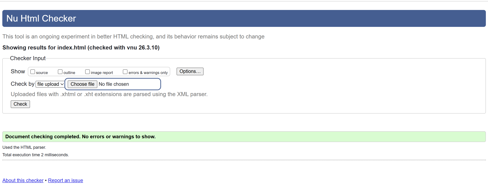
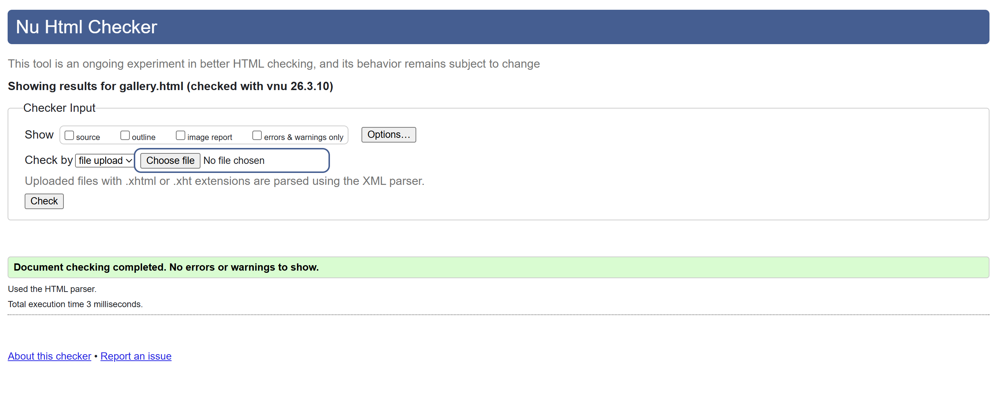
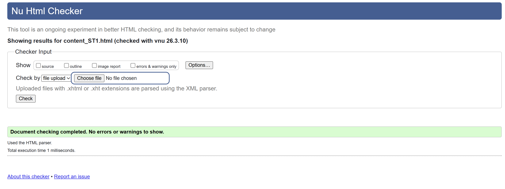

Validation overview
Each html files below were checked using the W3C HTML validator to make sure the code follows standard web guidelines.
I validated my three main pages: the home page, the gallery page and my content page.
Home page validation
This screenshot shows the validator result for home.html. Any issues were fixed before
the final version was saved.

Reflection: validating the page helped me check structure, heading order and small syntax mistakes that I made.
Gallery page validation
This screenshot shows the validator result for gallery.html. I checked that the modal structure,
buttons and image alt text were written correctly in my code.

Reflection: this page was harder because it included JavaScript interaction, so validation was useful for making sure that the HTML still remained fully right.
Content page validation
This screenshot shows the validator result for content_ST1.html. I checked the internal navigation,
unique ids, images and general semantic structure.

Reflection: the validation process helped confirm that the content page structure was well done and that the page would be easier to navigate for users.